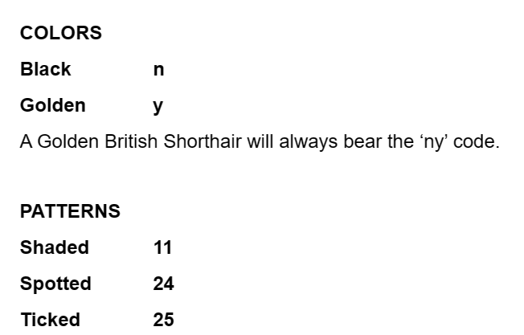

Belonging to: British Shorthairs and British Longhairs
British Shorthairs are considered to be the ideal feline companions with their calm temperament and easygoing nature. While most commonly known for their iconic solid blue-gray coat, British Shorthairs can come in a wide spectrum of amazing colors and patterns that include chocolate, blue, silver, cinnamon, cream, lilac and golden.
Dominant: Shorthair Gene > Longhair Gene
☞ Markings of golden shaded cats. Ny 25 is the most common one, and there is also ny11 and ny 12.